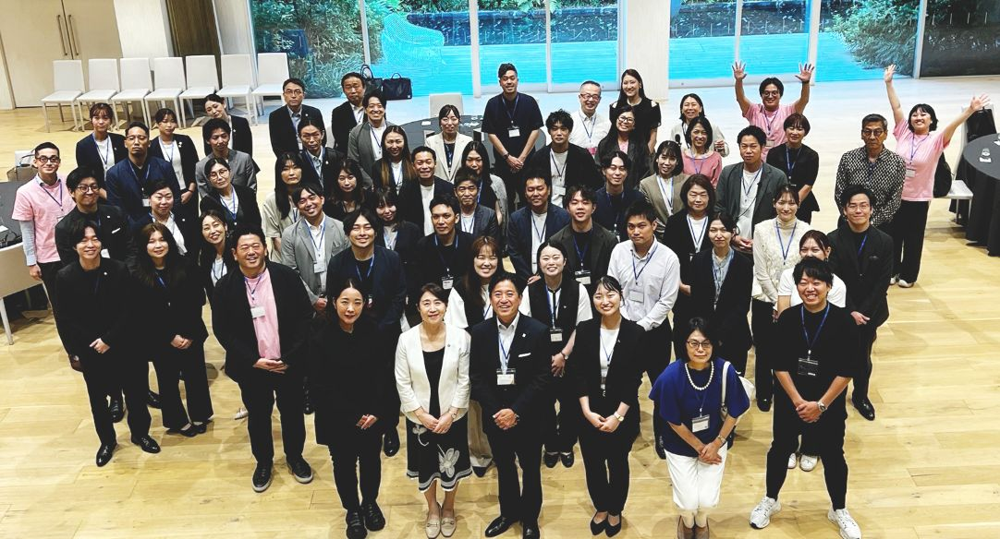

2026年7月27日、愛知ウェディング協議会 リアルカンファレンス2026を、MIRAIE LEXT HOUSE NAGOYAにて開催いたしました。
セミナーには、50名近い方々にお越しいただきました。今回は業界外の方にも関心を持っていただき、ご参加のお申し込みをいただけましたことも、心より感謝申し上げます。

第1部は、株式会社ドットアイ 代表取締役の大崎恵理子氏。結婚式場探しサービスを展開する企業の代表を務められた経験もお持ちの大崎氏から、現場のリアルな声とともにお話しいただきました。
強く心に残ったのは、「働きやすい」は「活躍したい」に直結しないという指摘です。休暇制度や福利厚生といった「過ごしやすさ」を整えても、それだけでは活躍にはつながらない。ワクワクする仕事や、身近なロールモデルの存在——そうした「ソフト面」が伴って初めて、意欲は育つ、というお話でした。
そして、意欲が下がる本当の理由として挙げられたのが、周囲の“気遣い”の弊害です。「子どもがいるから無理をさせないほうがいい」という配慮が、本人の意思とずれたまま、機会そのものを奪ってしまう——。本人は「なりたくない」のではなく、“やりたいと思える状態”になっていないだけ、という視点は、私たち一人ひとりが胸に刻むべきものでした。
「なりたい」ではなく「なれそう」と思える手触りを、いかにつくるか。等身大の先輩の姿を見せ、支え、信じて引き上げること。ウェディング業界にそのまま通じる、実践的なお話でした。
第2部は、前内閣総理大臣補佐官であり、一般社団法人 官民連携DX女性活躍コンソーシアム 代表理事の矢田稚子氏。日本全国から見た愛知、そして全産業から見たブライダル産業という、大きな視点からお話しいただきました。
賃金がこの30年ほとんど上がっていないこと、なかでも女性の賃金水準の課題。サービス業における非正規雇用の割合の高さ。そして、月経・妊娠出産・更年期といった健康課題が、キャリアや経済面に与える影響——。ウェディングもまた、多くの女性が支えるサービス業です。自分たちの業界の足元を、産業全体の構造のなかで見つめ直す機会となりました。
そのうえで、地域とデジタルによる就労機会の創出、官民連携での取り組みなど、これからの可能性についても具体的にお示しいただきました。
お二方の講演を拝聴し、愛知ウェディング協議会として、ウェディング業界にできること、そして愛知から世の中へ何を発信していくかを、お集まりの皆様と考える機会となりました。
女性が多く活躍する私たちの業界だからこそ、この問いに真正面から向き合う意味があります。今回のカンファレンスで得た視点を、それぞれの現場へ持ち帰り、少しずつでも形にしていければと思います。
愛知ウェディング協議会は、今後も「100年先まで続くウェディング」を目指し、以下の機会を創出してまいります。
ご登壇いただいた大崎恵理子氏、矢田稚子氏、そしてご参加いただいた皆様、誠にありがとうございました。